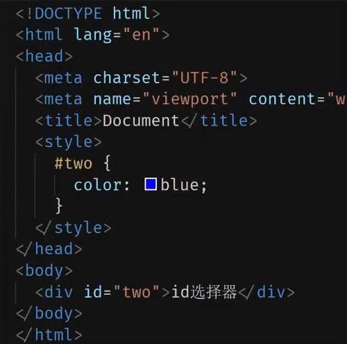
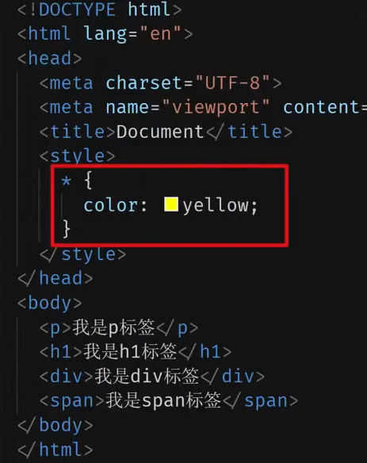
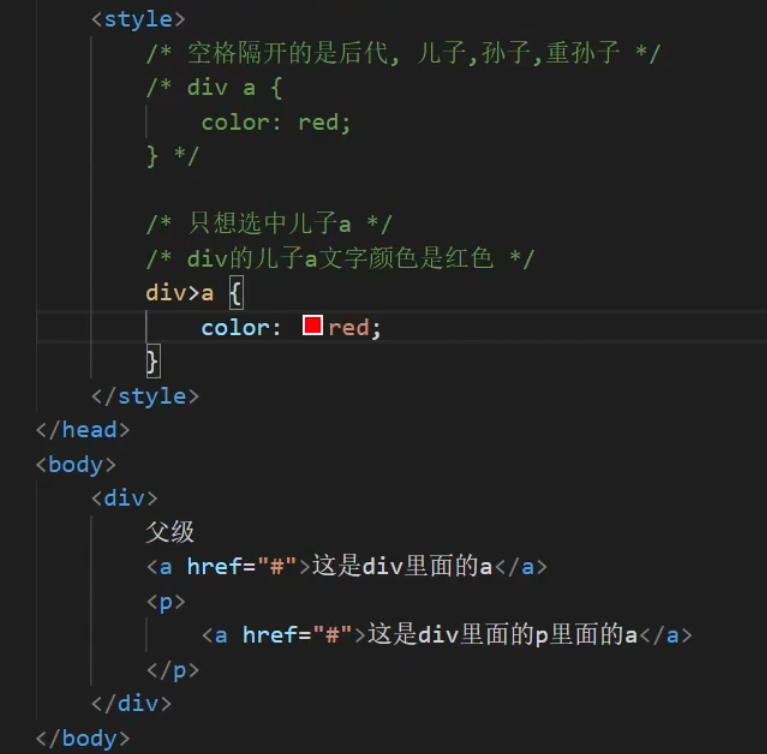
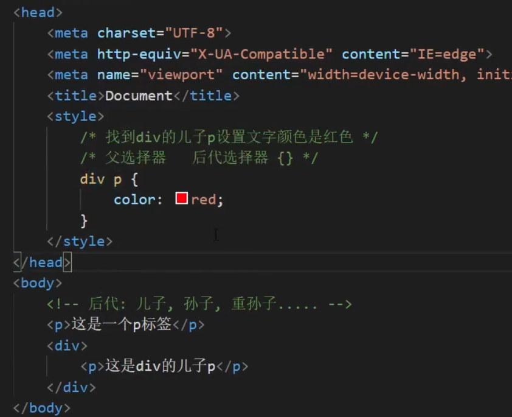

CSS中，选择器用来指定网页上我们想要样式化的HTML元素。
又称标签选择器
实例：
h1 {
color : red;
}
实例：
.box {
color : red;
}


根据一个元素上的某个标签的属性的存在以选择元素
a[title] {
}
a[href="https://example.com"]
{
}
用来样式化一个元素的特定状态。例如 :hover 伪类会在鼠标指针悬浮到一个元素上的时候选择这个元素：
选择器语法：选择器:hover { css }
注意点：
伪类选择器选中的是元素的某种状态
任何标签都可以添加伪类
a:hover {
}常见的伪类选择器
| 选择器 | 描述 |
|---|---|
:active |
在用户激活（例如点击）元素的时候匹配。 |
:any-link |
匹配一个链接的:link和:visited状态。 |
:blank |
匹配空输入值的<input>元素。 |
:checked |
匹配处于选中状态的单选或者复选框。 |
:current (en-US) |
匹配正在展示的元素，或者其上级元素。 |
:default |
匹配一组相似的元素中默认的一个或者更多的 UI 元素。 |
:dir |
基于其方向性（HTMLdir属性或者 CSSdirection属性的值）匹配一个元素。 |
:disabled |
匹配处于关闭状态的用户界面元素 |
:empty |
匹配除了可能存在的空格外，没有子元素的元素。 |
:enabled |
匹配处于开启状态的用户界面元素。 |
:first |
匹配分页媒体的第一页。 |
:first-child |
匹配兄弟元素中的第一个元素。 |
:first-of-type |
匹配兄弟元素中第一个某种类型的元素。 |
:focus |
当一个元素有焦点的时候匹配。 |
:focus-visible |
当元素有焦点，且焦点对用户可见的时候匹配。 |
:focus-within |
匹配有焦点的元素，以及子代元素有焦点的元素。 |
:future (en-US) |
匹配当前元素之后的元素。 |
:hover |
当用户悬浮到一个元素之上的时候匹配。 |
:indeterminate |
匹配未定态值的 UI 元素，通常为复选框。 |
:in-range |
用一个区间匹配元素，当值处于区间之内时匹配。 |
:invalid |
匹配诸如<input>的位于不可用状态的元素。 |
:lang |
基于语言（HTMLlang属性的值）匹配元素。 |
:last-child |
匹配兄弟元素中最末的那个元素。 |
:last-of-type |
匹配兄弟元素中最后一个某种类型的元素。 |
:left |
在分页媒体中，匹配左手边的页。 |
:link |
匹配未曾访问的链接。 |
:local-link (en-US) |
匹配指向和当前文档同一网站页面的链接。 |
:is() |
匹配传入的选择器列表中的任何选择器。 |
:not |
匹配作为值传入自身的选择器未匹配的物件。 |
:nth-child |
匹配一列兄弟元素中的元素——兄弟元素按照_an+b_形式的式子进行匹配（比如 2n+1 匹配元素 1、3、5、7 等。即所有的奇数个）。 |
:nth-of-type |
匹配某种类型的一列兄弟元素（比如，<p>元素）——兄弟元素按照_an+b_形式的式子进行匹配（比如 2n+1 匹配元素 1、3、5、7 等。即所有的奇数个）。 |
:nth-last-child |
匹配一列兄弟元素，从后往前倒数。兄弟元素按照_an+b_形式的式子进行匹配（比如 2n+1 匹配按照顺序来的最后一个元素，然后往前两个，再往前两个，诸如此类。从后往前数的所有奇数个）。 |
:nth-last-of-type |
匹配某种类型的一列兄弟元素（比如，<p>元素），从后往前倒数。兄弟元素按照_an+b_形式的式子进行匹配（比如 2n+1 匹配按照顺序来的最后一个元素，然后往前两个，再往前两个，诸如此类。从后往前数的所有奇数个）。 |
:only-child |
匹配没有兄弟元素的元素。 |
:only-of-type |
匹配兄弟元素中某类型仅有的元素。 |
:optional |
匹配不是必填的 form 元素。 |
:out-of-range |
按区间匹配元素，当值不在区间内的的时候匹配。 |
:past (en-US) |
匹配当前元素之前的元素。 |
:placeholder-shown |
匹配显示占位文字的 input 元素。 |
:playing |
匹配代表音频、视频或者相似的能“播放”或者“暂停”的资源的，且正在“播放”的元素。 |
:paused |
匹配代表音频、视频或者相似的能“播放”或者“暂停”的资源的，且正在“暂停”的元素。 |
:read-only |
匹配用户不可更改的元素。 |
:read-write |
匹配用户可更改的元素。 |
:required |
匹配必填的 form 元素。 |
:right |
在分页媒体中，匹配右手边的页。 |
:root |
匹配文档的根元素。 |
:scope |
匹配任何为参考点元素的的元素。 |
:valid |
匹配诸如<input>元素的处于可用状态的元素。 |
:target |
匹配当前 URL 目标的元素（例如如果它有一个匹配当前URL 分段的元素）。 |
:visited |
匹配已访问链接。 |
选择一个元素的某个部分而不是元素自己。例如，::first-line 会选择一个元素（下面的情况中是<p>）中的第一行。
/* 每一个 <p> 元素的第一行。 */
p::first-line {
color: blue;
text-transform: uppercase;
}常见的伪元素选择器
| 选择器 | 描述 |
|---|---|
::after |
匹配出现在原有元素的实际内容之后的一个可样式化元素。 |
::before |
匹配出现在原有元素的实际内容之前的一个可样式化元素。 |
::first-letter |
匹配元素的第一个字母。 |
::first-line |
匹配包含此伪元素的元素的第一行。 |
::grammar-error |
匹配文档中包含了浏览器标记的语法错误的那部分。 |
::selection |
匹配文档中被选择的那部分。 |
::spelling-error |
匹配文档中包含了浏览器标记的拼写错误的那部分。 |
根据HTML标签的嵌套关系，选择父元素子代中满足条件的元素
选择器语法：选择器1 > 选择器2 {css}
表示在选 择器1 所找到标签的 子代（儿子）中，找到满足 选择器2 的标签，设置样式
注意点：
子代只包括：儿子
子代选择器中，选择器与选择器之前通过>隔开

根据HTML标签的嵌套关系，选择父元素后代中满足条件的元素
选择器语法：选择器1 选择器2 {css}
表示在选择器1所找到标签的后代（儿子、孙子、重孙子...)中，找到满足选择器2的标签，设置样式
注意点：
后代包括：儿子、孙子、重孙子……
后代选择器中，选择器与选择器之前通过空格隔开

同时选择多组标签，设置相同的样式
选择器语法：选择器1 , 选择器2 { css }
表示找到 选择器1 和 选择器2 选中的标签，设置样式
注意点：
并集选择器中的每组选择器之间通过 , 分隔
并集选择器中的每组选择器可以是基础选择器或者复合选择器
并集选择器中的每组选择器通常一行写一个，提高代码的可读性
<style>
p , div , span, h1 {
color : red;
}
</style>选中页面中同时满足多个选择器的标签
选择器语法：选择器1选择器2 { css }
表示找到页面中既能被 选择器1 选中，又能被 选择器2 选中的标签(既又原则），设置样式
注意点：
交集选择器中的选择器之间是紧挨着的，没有东西分隔
交集选择器中如果有标签选择器，标签选择器必须写在最前面
<style>
div.container > span#highlight {
color: red;
}
</style>
<div class="container">
<span id="highlight">我是高亮的文本</span>
<span>我是普通的文本</span>
</div>[1] CSS: https://developer.mozilla.org/zh-CN/docs/Glossary/CSS[2] HTML: https://developer.mozilla.org/zh-CN/docs/Glossary/HTML[3] 类: https://developer.mozilla.org/zh-CN/docs/Learn/CSS/Building_blocks/Selectors#%E7%B1%BB%E5%9E%8B%E3%80%81%E7%B1%BB%E5%92%8C_id_%E9%80%89%E6%8B%A9%E5%99%A8[4] ID 选择器: https://developer.mozilla.org/zh-CN/docs/Learn/CSS/Building_blocks/Selectors#%E7%B1%BB%E5%9E%8B%E3%80%81%E7%B1%BB%E5%92%8C_id_%E9%80%89%E6%8B%A9%E5%99%A8[5] `:active`: https://developer.mozilla.org/zh-CN/docs/Web/CSS/:active[6] `:any-link`: https://developer.mozilla.org/zh-CN/docs/Web/CSS/:any-link[7] `:blank`: https://developer.mozilla.org/zh-CN/docs/Web/CSS/:blank[8] ``元素: https://developer.mozilla.org/zh-CN/docs/Web/HTML/Element/input[9] `:checked`: https://developer.mozilla.org/zh-CN/docs/Web/CSS/:checked[10] `:current` (en-US): /en-US/docs/Web/CSS/:current "Currently only available in English (US[11] `:default`: https://developer.mozilla.org/zh-CN/docs/Web/CSS/:default[12] `:dir`: https://developer.mozilla.org/zh-CN/docs/Web/CSS/:dir[13] `dir`: https://developer.mozilla.org/zh-CN/docs/Web/HTML/Global_attributes/dir[14] `direction`: https://developer.mozilla.org/zh-CN/docs/Web/CSS/direction[15] `:disabled`: https://developer.mozilla.org/zh-CN/docs/Web/CSS/:disabled[16] `:empty`: https://developer.mozilla.org/zh-CN/docs/Web/CSS/:empty[17] `:enabled`: https://developer.mozilla.org/zh-CN/docs/Web/CSS/:enabled[18] `:first`: https://developer.mozilla.org/zh-CN/docs/Web/CSS/:first[19] 分页媒体: https://developer.mozilla.org/zh-CN/docs/Web/CSS/CSS_paged_media[20] `:first-child`: https://developer.mozilla.org/zh-CN/docs/Web/CSS/:first-child[21] `:first-of-type`: https://developer.mozilla.org/zh-CN/docs/Web/CSS/:first-of-type[22] `:focus`: https://developer.mozilla.org/zh-CN/docs/Web/CSS/:focus[23] `:focus-visible`: https://developer.mozilla.org/zh-CN/docs/Web/CSS/:focus-visible[24] `:focus-within`: https://developer.mozilla.org/zh-CN/docs/Web/CSS/:focus-within[25] `:future` (en-US): /en-US/docs/Web/CSS/:future "Currently only available in English (US[26] `:hover`: https://developer.mozilla.org/zh-CN/docs/Web/CSS/:hover[27] `:indeterminate`: https://developer.mozilla.org/zh-CN/docs/Web/CSS/:indeterminate[28] 复选框: https://developer.mozilla.org/zh-CN/docs/Web/HTML/Element/input/checkbox[29] `:in-range`: https://developer.mozilla.org/zh-CN/docs/Web/CSS/:in-range[30] `:invalid`: https://developer.mozilla.org/zh-CN/docs/Web/CSS/:invalid[31] `:lang`: https://developer.mozilla.org/zh-CN/docs/Web/CSS/:lang[32] lang: https://developer.mozilla.org/zh-CN/docs/Web/HTML/Global_attributes/lang[33] `:last-child`: https://developer.mozilla.org/zh-CN/docs/Web/CSS/:last-child[34] `:last-of-type`: https://developer.mozilla.org/zh-CN/docs/Web/CSS/:last-of-type[35] `:left`: https://developer.mozilla.org/zh-CN/docs/Web/CSS/:left[36] 分页媒体: https://developer.mozilla.org/zh-CN/docs/Web/CSS/CSS_paged_media[37] `:link`: https://developer.mozilla.org/zh-CN/docs/Web/CSS/:link[38] `:local-link` (en-US): /en-US/docs/Web/CSS/:local-link "Currently only available in English (US[39] `:is()`: https://developer.mozilla.org/zh-CN/docs/Web/CSS/:is[40] `:not`: https://developer.mozilla.org/zh-CN/docs/Web/CSS/:not[41] `:nth-child`: https://developer.mozilla.org/zh-CN/docs/Web/CSS/:nth-child[42] `:nth-of-type`: https://developer.mozilla.org/zh-CN/docs/Web/CSS/:nth-of-type[43] `:nth-last-child`: https://developer.mozilla.org/zh-CN/docs/Web/CSS/:nth-last-child[44] `:nth-last-of-type`: https://developer.mozilla.org/zh-CN/docs/Web/CSS/:nth-last-of-type[45] `:only-child`: https://developer.mozilla.org/zh-CN/docs/Web/CSS/:only-child[46] `:only-of-type`: https://developer.mozilla.org/zh-CN/docs/Web/CSS/:only-of-type[47] `:optional`: https://developer.mozilla.org/zh-CN/docs/Web/CSS/:optional[48] `:out-of-range`: https://developer.mozilla.org/zh-CN/docs/Web/CSS/:out-of-range[49] `:past` (en-US): /en-US/docs/Web/CSS/:past "Currently only available in English (US[50] `:placeholder-shown`: https://developer.mozilla.org/zh-CN/docs/Web/CSS/:placeholder-shown[51] `:playing`: https://developer.mozilla.org/zh-CN/docs/Web/CSS/:playing[52] `:paused`: https://developer.mozilla.org/zh-CN/docs/Web/CSS/:paused[53] `:read-only`: https://developer.mozilla.org/zh-CN/docs/Web/CSS/:read-only[54] `:read-write`: https://developer.mozilla.org/zh-CN/docs/Web/CSS/:read-write[55] `:required`: https://developer.mozilla.org/zh-CN/docs/Web/CSS/:required[56] `:right`: https://developer.mozilla.org/zh-CN/docs/Web/CSS/:right[57] 分页媒体: https://developer.mozilla.org/zh-CN/docs/Web/CSS/CSS_paged_media[58] `:root`: https://developer.mozilla.org/zh-CN/docs/Web/CSS/:root[59] `:scope`: https://developer.mozilla.org/zh-CN/docs/Web/CSS/:scope[60] `:valid`: https://developer.mozilla.org/zh-CN/docs/Web/CSS/:valid[61] `:target`: https://developer.mozilla.org/zh-CN/docs/Web/CSS/:target[62] URL 分段: https://en.wikipedia.org/wiki/Fragment_identifier[63] `:visited`: https://developer.mozilla.org/zh-CN/docs/Web/CSS/:visited[64] `::after`: https://developer.mozilla.org/zh-CN/docs/Web/CSS/::after[65] `::before`: https://developer.mozilla.org/zh-CN/docs/Web/CSS/::before[66] `::first-letter`: https://developer.mozilla.org/zh-CN/docs/Web/CSS/::first-letter[67] `::first-line`: https://developer.mozilla.org/zh-CN/docs/Web/CSS/::first-line[68] `::grammar-error`: https://developer.mozilla.org/zh-CN/docs/Web/CSS/::grammar-error[69] `::selection`: https://developer.mozilla.org/zh-CN/docs/Web/CSS/::selection[70] `::spelling-error`: https://developer.mozilla.org/zh-CN/docs/Web/CSS/::spelling-error